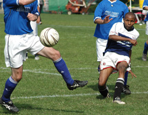
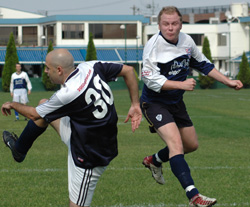
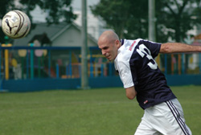

|
YC&AC, Sat 14th Oct. BFC climbed to second in the TML first division with a convincing 4-1 victory over the Geckoes on Saturday despite cocking up two penalties. American import Terry Welliver scored twice for BFC, who preserved their unbeaten record ahead of the top-of-the-table clash with leaders Hibs.
Referee Quentin awarded BFC their first penalty after 15 minutes when captain Jon Day went down after colliding with Geckoes goalkeeper Rob Keyworth. To be fair, it looked a trifle harsh but BFC's appeals were vociferous and Day did graze a knee in falling. BFC's no-nonsense defender Phil Lowes stepped up and drilled BFC into the lead. A second followed 10 minutes or so later, in rather more emphatic circumstances, when Evans Githani danced in from the left then back on to his left foot and humpteed it fully 30 yards into the far top corner, giving Rob absolutely no chance.
Suspicion that Evans' radar was off and he was, in fact, looking to cross the ball, raged later that night when Evans was overheard telling two birds in the pub ''...And then I cut inside and hit this fantastic shot, right -- No, come back!" Benefit of the doubt aside, though, it was one of the finest BFC goals in, ooh, 20 years or so.
In the excitement BFC missed a golden chance to make it 3-0 when the nimble-footed Shosuke was smacked in the face by a Geckoes defender, presumably for being too nimble-footed. If the first peno was dubious, this was stone-wall and up stepped BFC's nonsense defender Phil, who Homer Simpsoned it into the street backing onto the pitch. Doh!
 BFC quickly paid the price when Geckoes pulled one back through Jason Teresi. They quickly restored their two-goal cushion, though, when Terry smashed a first-time shot into the top corner from the edge of the box.
"Yeah, baby!"
Alastair Himmer had one disallowed at the start of the second half while Jon Day and the excellent Taka also went close. BFC's Finnish male model goalkeeper Jyrki Jaskelainen leapt from his deckchair like a giant salmon to repel one Geckoes raid but there was precious little quality from either team in the second half as players tired in the heat.
There was still time for BFC to miss another penalty, however, Day's spot kick saved by Rob's legs after Terry had been dry-humped in the box by an over-zealous Geckoes defender. Terry capped a man-of-the-match performance with a late tap-in to give an improving BFC their second straight win.
Report by Battered Sneaker
|